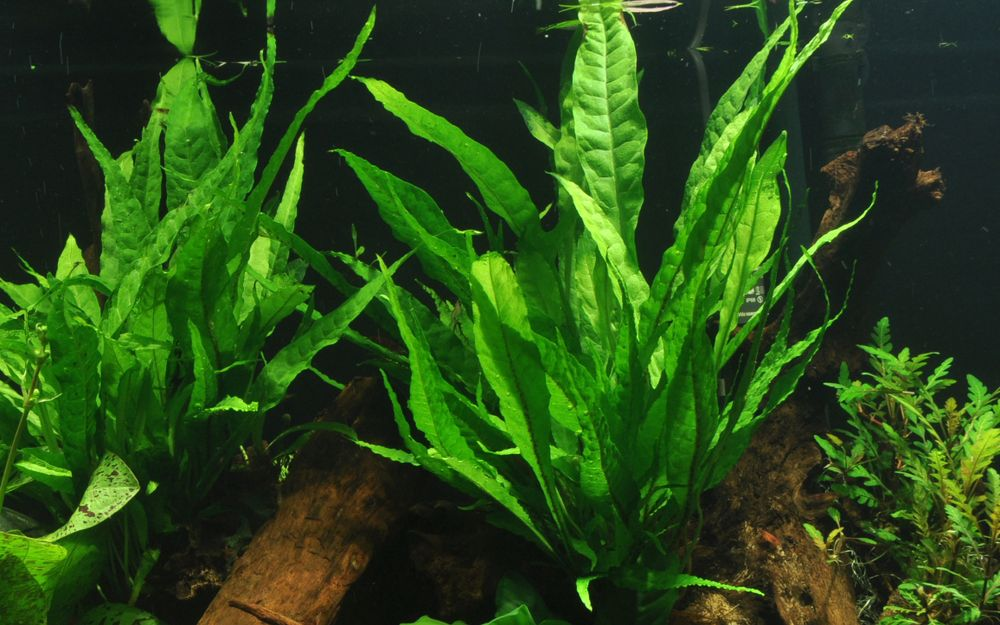

Javafarn
Der Javafarn ist eine robuste und pflegeleichte Wasserpflanze für Süßwasseraquarien.

Javafarn
- Aussehen: Lange, dunkelgrüne Blätter, die aus einem kräftigen Rhizom wachsen.
- Herkunft: Südostasien.
- Licht: Der Javafarn wächst auch bei schwachem bis mittlerem Licht.
- Wachstum: Er wächst langsam und muss nur selten zurückgeschnitten werden.
- Wassertemperatur: Etwa 20–28 °C.
- Pflege: Der Javafarn ist anspruchslos und eignet sich gut für Anfänger.
- Vermehrung: Neue Pflanzen entstehen aus Tochterpflanzen an den Blättern oder durch das Teilen des Rhizoms.
Geeigneter Standort
Der Javafarn kann auf Wurzeln oder Steinen befestigt werden. Das Rhizom sollte nicht vollständig in den Bodengrund eingegraben werden.
Meine Bewertung
⭐⭐⭐⭐⭐
Zurück zu den Wasserpflanzen
Hier klicken